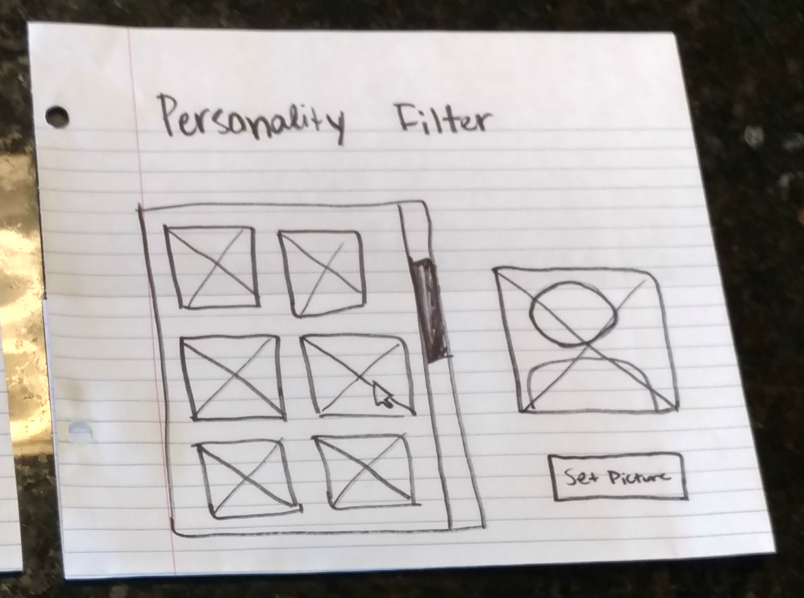
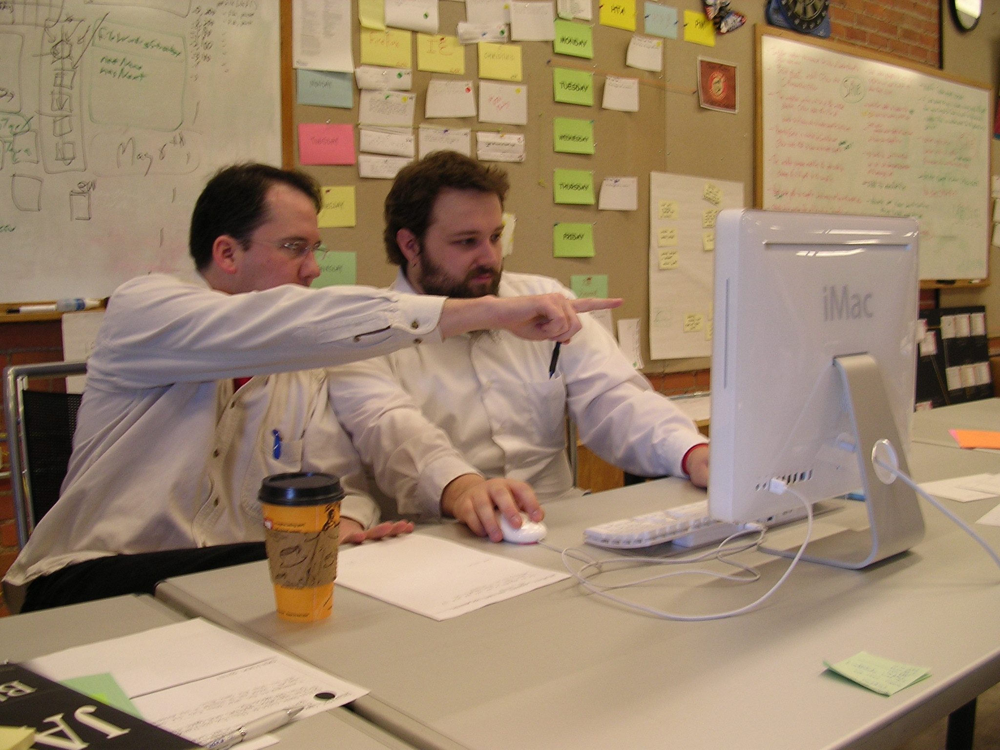

Rania Glass
Interaction Designer

When I was a child, I wanted to be an inventor. There's a thrill in using the imagination to dream up things, all kinds of things, that still excites and inspires. As an older child, I was drawn to architecture, to costuming, and to interior design. My imagination was captured by the beautiful spaces and displays created; I was inspired by the functionality of the pieces I saw. When I moved into a dorm room my freshman year of college, my plans for the room weren't inspired by fairy lights and DIY art projects - they were driven by the goal of creating a space where I could study and relax effectively. My decorative and organizational choices followed from research into how best to create that space. My freshman dorm was awesome because it was driven by design, I just didn't have the word for it yet.
I changed my major at the end of that freshman year to computer science. This is where the inventors are, I thought. These are the people building the future. Then I saw what the designers do. It's the designers who envision the future, piece by piece, step by step. How can we live better? Brilliant solutions start with design. When I started to understand that, I realized that I want to be a designer.
What I've Done
These are some of the digital products I've designed.
Facebook Filter
Requirements Gathering
How is Facebook doing this?
What about other services for sharing and editing images?

And are they targeting different users?
Ideation
What possible layouts could meet the gathered criteria?

I worked side by side with teammates to create lots of possible solutions.
I used sharpies and paper to sketch up the ideas so that we could work fast & cheap.

Prototyping

Later prototypes were created using HTML; these were pretty high fidelity, but thanks to Bootstrap, we could make changes quickly as needed.
These prototypes were delivered to the developer and used to build the product.
Evaluating
We used qualitative and quantitative assessment criteria to evaluate the design.
This included user interviews and click counts.
This revealed that the less effort it takes, as determined by screens viewed and buttons clicked, the easier the product is to use.
Design Club Website
Requirements Gathering
Who will be accessing the site?

What are they looking for?
How can we best provide that?
Ideation
What possible features will meet the gathered criteria?

The entire board brainstormed together.

We sketched on paper and discussed ideas.
Prototyping
Prototypes were created using HTML. The team members who weren't as proficient with HTML partnered with some of the more senior members who were so that we could learn and work together efficiently.
These prototypes were used in part to build the final website.

Evaluating
We used mostly quantitative assessment criteria to evaluate the design.

How is it influencing member participation and involvement?

Is it a useful means of communication?
What I'm Doing
Webapp UI Standards
I'm currently working as a UI/UX Designer at Georgia Tech Research Institute in the Enterprise Systems Department. This department designs and builds the applications that support researcher activity. My project is to create interactive documentation for the UI Standards so that we can implement responsivity and consistent UI elements throughout the suite of applications.
Requirements Gathering
This tool will be used by experienced Java developers; the users know how to program, but are unfamiliar with HTML5 and responsivity.
Their current process involves lots of trial and error; it often prompts use of tutorials and CSS walkthroughs. This tool should meet that need so that the overall workflow is smoother.
This tool should provide all the standard pieces for building a GTRI application.
Ideation
What possible features will meet the gathered criteria?

What are the atomic elements that need to be included?

I sketched different flows in Balsamiq.
Prototyping
I built prototypes in HTML. This made it very easy for the users to interact with the prototype during testing.

These prototypes will be used in the application; because they're already in HTML, they only need polishing before being ready to implement.

Evaluating
The primary goal of this system is helping developers to work faster and understand how to use a responsive framework.
This will be evaluated by determining how frequently the developers use the tool and how it affects the speed with which they can prepare deliverables.
Is the tool useful?